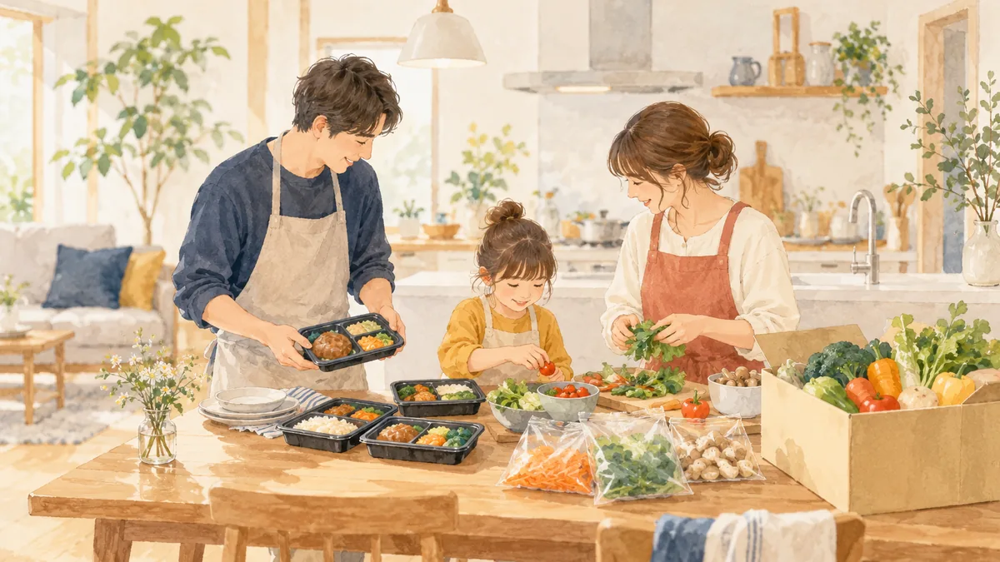

食品
お米や食品を、無理なく安く買う方法。
6 記事
このジャンルの記事は順次公開します。下の関連記事もあわせてご覧ください。
食品に関係する記事

宅配食・ミールキットの 寄付 5,000 円から
寄付 5,000 円から うなぎと
うなぎと カニの
カニの 日用品と
日用品と 一人暮らしの
一人暮らしのお米や食品を、無理なく安く買う方法。
6 記事
このジャンルの記事は順次公開します。下の関連記事もあわせてご覧ください。

宅配食・ミールキットの寄付 5,000 円からうなぎとカニの日用品と一人暮らしの